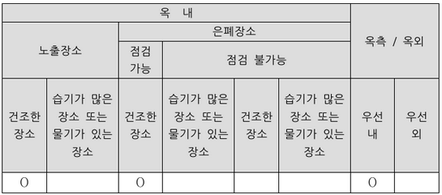
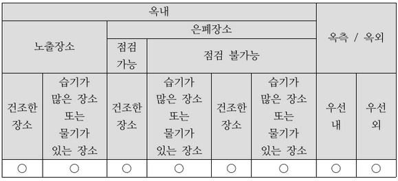
| 점수 | 세부기준 |
|---|---|
| 5~0점 | 빈칸 총 5개 중 정답 1개당 1점 획득 |
모두 시설 가능한 배선: 금속관 배선, 합성수지관(CD관 제외), 비닐 피복 2종 가요전선관, 케이블 배선, 케이블 트레이 배선
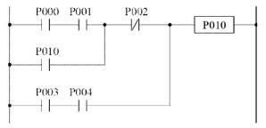
정답
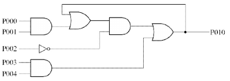
부분점수
| 점수 | 세부기준 |
|---|---|
| 4점 | 논리 회로도가 정답과 모두 맞은 경우 4점 획득 |
| 0점 | 논리 회로도가 정답과 다른 곳이 있으면 0점 (부분점수 없음) |
해설
문제의 PLC 래더도를 논리식으로 바꾸면 다음과 같다.
\[ P010 = (((P000 \cdot P001) + P010) \cdot P002) + P003 \cdot P004 \]
| 구분 | 권장 교정주기(년) |
|---|---|
| 계전기 시험기 | ① |
| 적외선 열화상 카메라 | ② |
| 회로시험기 | ③ |
| 절연저항 측정기 (500[V], 100[MΩ]) | ④ |
| 클램프 미터 | ⑤ |
①
②
③
④
⑤
| 구분 | 권장 교정주기(년) |
|---|---|
| 계전기 시험기 | 1 |
| 적외선 열화상 카메라 | 1 |
| 회로시험기 | 1 |
| 절연저항 측정기 (500[V], 100[MΩ]) | 1 |
| 클램프 미터 | 1 |
| 점수 | 세부기준 |
|---|---|
| 5점 | 소문항 총 5개가 정답과 모두 맞은 경우 5점 획득 |
| 1점 | 소문항 총 5개 중 정답 1개당 부분 점수 1점 획득 |
[전기안전관리자의 직무에 관한 고시] 제9조 (계측장비 교정 등)
전기안전관리자는 전기설비의 유지·운용 업무를 위해 다음의 계측장비를 주기적으로 교정하고 또한 안전장구의 성능을 적정하게 유지할 수 있도록 시험을 하여야 한다.
| 구분 | 권장 교정주기(년) |
|---|---|
| 계전기 시험기 | 1 |
| 절연내력 시험기 | 1 |
| 절연유 내압 시험기 | 1 |
| 적외선 열화상 카메라 | 1 |
| 전원품질분석기 | 1 |
| 절연저항 측정기 (500[V], 100[MΩ]) | 1 |
| 절연저항 측정기 (1000[V], 2000[MΩ]) | 1 |
| 회로시험기 | 1 |
| 접지저항 측정기 | 1 |
| 클램프 미터 | 1 |
| 특고압 COS(컷아웃스위치) 조작봉 | 1 |
| 저압검전기 | 1 |
| 고압·특고압 검전기 | 1 |
| 절연장화 | 1 |
| 절연안전모 | 1 |
[보기]
정답
부분점수
| 점수 | 세부기준 |
|---|---|
| 5점 | 소문항 총 3개가 정답과 모두 맞은 경우 5점 획득 |
| 4~0점 | 소문항 총 3개 중 정답 1개 2점, 2개 4점 획득 |
해설
산업통상자원부 [설계감리업무 수행지침] 제8조 (설계용역의 관리)
설계감리원은 필요한 경우 다음 각 호의 문서를 비치하고, 그 세부양식은 발주자의 승인을 받아 설계감리과정을 기록하여야 하며, 설계감리 완료와 동시에 발주자에게 제출하여야 하며, 필요한 경우 전자매체(CD-ROM)로 제출할 수 있다.
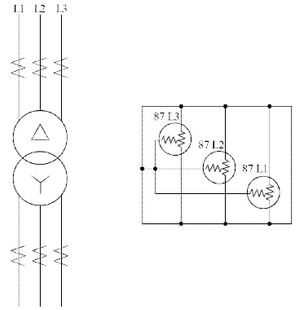
위 그림은 △-Y 결선방식 주변압기 보호 회로의 일부를 보여줍니다. 1차측과 2차측의 CT 2차측 회로를 완성하고 접지가 필요한 부분에 접지 기호를 추가해야 합니다. 정답은 그림에 제시된 회로도를 참고하여 완성해야 합니다.
| 점수 | 세부기준 |
|---|---|
| 5점~0점 | 도면작성 문제는 동작 또는 오동작으로 정답일 때만 5점 획득 |
변압기에 사용되는 비율차동기의 결선방식에 대한 도면을 완성할 수 있는지를 확인하는 문제이다. 여기서는 변압기의 결선방법과 비율차동기의 결선방법이 다르다는 것을 알고, 결선방법에 맞게 CT를 연결할 수 있어야 한다.
① 용도: 발전기나 변압기의 내부 고장에 대한 보호 목적으로 사용한다.
② 동작원리: 정상 상태에서는 1, 2차측 변류기의 2차 전류의 크기가 같아 동작 코일에 전류가 흐르지 않지만, 내부고장으로 변류기의 2차 전류의 크기가 달라지면 동작코일에 전류가 흘러 보호계전기가 동작한다.
③ 비율차동계전기의 결선방법: 변압기의 결선이 Y-\(\Delta\)면 비율차동계전기의 결선은 \(\Delta\)-Y로, 변압기의 결선이 \(\Delta\)-Y면 비율차동계전기의 결선은 Y-\(\Delta\)로 변압기의 결선방법과 반대로 결선한다.
④ 차동계전기 고유번호 정리
[동작사항]
[범례]
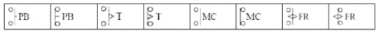
[미완성 결선도]
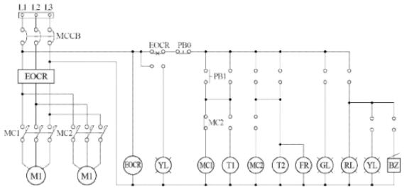
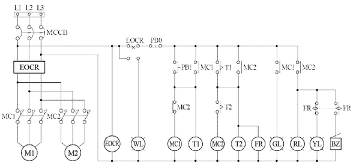
| 점수 | 세부기준 |
|---|---|
| 5점~0점 | 도면작성 문제는 동작 또는 오동작으로 정답일 때만 5점 획득 |
[동작사항]을 이용한 도면을 완성하는 순서
[계산과정]
[계산과정]
해설) 복합 계산형 / 난이도 중
[계산과정]
\[ Q_c = 18.5 \times \left( \frac{\sqrt{1 - 0.7^2}}{0.7} - \frac{\sqrt{1 - 0.9^2}}{0.9} \right) \cong 9.91 \text{ [kVA]} \]
정답 9.91 [kVA]
[계산과정]
\[ C = \frac{Q}{\omega V^2} = \frac{Q}{(2\pi f) \times V^2} = \frac{9.91 \times 10^3}{(2\pi \times 60) \times 380^2} \cong 182.04 \text{ [µF]} \]
정답 182.04 [µF]
부분점수
| 점수 | 세부기준 |
|---|---|
| 5점 | 소문항 (1), (2) 총 2개의 계산과정과 정답이 모두 맞은 경우 5점 획득 |
| 2점 | 소문항 (1)의 계산과정과 정답이 모두 맞으면 2점 획득 |
| 3점 | 소문항 (2)의 계산과정과 정답이 모두 맞으면 3점 획득 |
해설
[전력용 콘덴서의 용량 계산식]
\[ Q = P(\tan\delta_1 - \tan\delta_2) = P \left( \frac{\sqrt{1 - \cos^2\delta_1}}{\cos\delta_1} - \frac{\sqrt{1 - \cos^2\delta_2}}{\cos\delta_2} \right) \text{ [VA]} \]
[커패시터의 용량]
△결선: $Q_= 3 f CE^2 = 3 f CV^2 $
Y결선: $Q_Y = 3 f CE^2 = 3 f C ( )^2 = 2f CV^2 $
C: 전선 1선당 정전용량 [F], E: 상 전압 [V], V: 선간전압 (V), f: 주파수 [Hz]
[계산과정]
해설: 복합계산형 / 난이도 中
\[ e = V_s - V_r = 3,300 - 3,150 = 150, R = \frac{e \times V_r}{P} = \frac{150 \times 3,150}{1000 \times 10^3} \approx 0.48 \]
\[ S = \rho \frac{l}{R} = (1.818 \times 10^{-2}) \times \frac{3}{0.48} \approx 113.63 [mm^2] \]
정답 120[mm²]을 선정
| 점수 | 세부기준 |
|---|---|
| 5점 | 계산과정과 답이 모두 맞은 경우 5점 획득 |
| 0점 | 계산과정과 답 중 오류가 있으면 0점 |
① 전압 강하: \(e = V_s - V_r = \frac{P}{V_r}(R + X \tan\theta) = \frac{P}{V_r}R\) (조건: 리액턴스 = 0(무시))
② 전선의 저항: $e = (R) R = $
③ 전선의 굵기: \(R = \rho \frac{l}{S} 에서 전선의 단면적은 S = \rho \frac{l}{R}\) 이다.
④ 전선의 규격
[조건]
[냉각탑 팬]
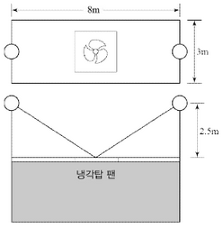
[계산과정]
[계산과정]
조명 1개의 수평면 조도 : $E_{h0} = = $
중앙에서 수평면 조도(양쪽 조명) : $Eh = 2 E{h0} = 2 = 12.84 [lx] $
정답 12.84 [lx]
| 점수 | 세부기준 |
|---|---|
| 5점 | 계산과정과 답이 모두 맞은 경우 5점 획득 |
| 0점 | 계산과정과 답 중 오류가 있으면 0점 |
\[ 수평면 조도 E_h = \frac{I}{r^2} \cos\theta \]
\[ 수직면 조도 E_v = \frac{I}{r^2} \sin\theta \]
해설) 단순 계산형+단답 암기형 / 난이도 下
[계산과정]
공칭전압 154[kV]의 정격전압은 170[kV]이다.
중성점 직접 접지식 최대 사용전압의 범위가 60[kV] 초과 170[kV]이하 조건
\[ 170 \times 0.72 = 122.4 \]
정답 122.4[kV]
122.4[kV]의 전압을 전로와 대지 사이에 연속하여 10분간 가한다.
부분점수
| 점수 | 세부기준 |
|---|---|
| 5점 | 소문항 (1), (2) 총 2개의 계산과정과 정답이 모두 맞은 경우 5점 획득 |
| 3점 | 소문항 (1)의 계산과정과 정답이 모두 맞으면 3점 획득 |
| 2점 | 소문항 (2)의 정답이 맞으면 2점 획득 |
해설
[154[kV] 케이블 전압 [IEC60840], [KS C3405]]
정격전압 \(U_0\): 도체와 금속 시스 또는 도체와 대지 사이의 전압 = 87[kV]
공칭전압 U: 도체와 도체 사이 전압 = 154[kV]
[한국전기설비규정 132] 전로의 절연저항 및 절연내력
| 접지방식 | 최대 사용 전압 | 시험전압배수 | 최저시험전압 |
|---|---|---|---|
| 비접지 | 7[kV] 이하 | 1.5배 | |
| 7[kV] 초과 60[kV] 이하 | 1.25배 | 10,500[V] | |
| 중성점 비접지 | 60[kV] 초과 | 1.25배 | |
| 중성점 접지 | 60[kV] 초과 | 1.1배 | 75[V] |
| 중성점 직접접지 | 60[kV] 초과 170[kV] 이하 | 0.72배 | |
| 170[kV] 초과 | 0.64배 | ||
| 중성점 다중접지 | 7[kV] 초과 25[kV] 이하 | 0.92배 |
[계산과정]
[계산과정]
해설) 단순 계산형 / 난이도 下
[계산과정]
\(I_1 = \frac{P}{\sqrt{3} V_1} = \frac{200 \times 10^3}{\sqrt{3} \times 200} \doteq 577.35\)
정답 577.35[A]
[계산과정]
$I_5 = = $
정답 57.74[A]
| 점수 | 세부기준 |
|---|---|
| 5점 | 소문항 (1), (2) 총 2개의 계산과정과 정답이 모두 맞은 경우 5점 획득 |
| 2점 | 소문항 (1)의 계산과정과 정답이 모두 맞으면 2점 획득 |
| 3점 | 소문항 (2)의 계산과정과 정답이 모두 맞으면 3점 획득 |
[3상 전력과 선전류 계산식]
$ P = V_L I_L = 3V_p I_p $ 에서 선전류 $I_L = = $
[UPS 시스템의 구성]
축전기, 정류기, 인버터로 구성
[6스텝(펄스) 3상 인버터의 전압]
① 구형파 형태의 전압으로 공급
② 6스텝의 고조파: $6n = 1, 5, 7, 11, 13, $일 때, 푸리에 급수로 전개 시 홀수차 고조파만 존재한다.
[제고조파의 출력전압]
\[ 선간전압 v_L(t) = \sum \frac{2\sqrt{3}V_d}{\pi} \left( \frac{1}{n} \sin(n\omega t \pm 30^\circ) \right) \]
\[ 상전압 v_p(t) = \sum \frac{2V_d}{\pi} \left( \frac{1}{n} \sin(n\omega t) \right) \]
[계산과정]
변류기의 2차측 전류 \(I_s\)는 다음과 같이 계산됩니다.
\[ I_s = \frac{5}{50} \times 8000 = 800[A] \]
따라서, 변류기의 정격 과전류 강도는 800[A] 입니다.
정답 800[A]
()
(해설) 단순 계산형 / 난이도 下
[계산과정]
$S_n = S = $계산값보다 커야 한다.
정답 75배를 선정한다.
부분점수
| 점수 | 세부기준 |
|---|---|
| 5점 | 계산과정과 답이 모두 맞은 경우 5점 획득 |
| 0점 | 계산과정과 답 중 오류가 있으면 0점 |
해설
[KS C 1707] 계기용 변성기(전력 수급용)
\[ S = \frac{S_n}{\sqrt{t}} \]
S: 통전시간 t초에서의 단시간 전류 강도
\[ **[정격 단시간 전류 S_n 의 보증 단시간 전류]** \]
| 정격 단시간 전류 강도 | 보증 단시간 전류 |
|---|---|
| 40 | 정격 1차전류의 40배 |
| 75 | 정격 1차전류의 75배 |
| 150 | 정격 1차전류의 100배 |
| 300 | 정격 1차전류의 300배 |
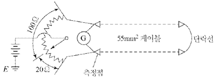
[계산과정]
[계산과정]
\[ l = \frac{2 \times 20 \times 3.6}{20 + 100} = 1.2 [km] \]
정답 1.2[km]
부분점수
| 점수 | 세부기준 |
|---|---|
| 5점 | 계산과정과 답이 모두 맞은 경우 5점 획득 |
| 0점 | 계산과정과 답 중 오류가 있으면 0점 |
접근 POINT
머레이 루프법은 케이블의 저항을 통해 휘트스톤 브리지의 원리를 이용하여 사고 점까지 거리를 측정하는 방법으로서, 저항을 통하여 측정하므로 정밀도가 매우 높다. (오차 1[%] 내외)
해설
머레이 루프법의 원리 (휘트스톤 브리지)
“브리지 회로가 평형 검류계 G에 전류가 흐르지 않음”이고 아래 조건 만족할 때
\[ R_1 \times R_4 = R_2 \times R_3 \]
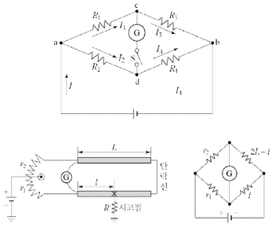
$ r_2 l = r_1 (2L - l) $이 성립되므로, 정리하면 $l = L $이다.
[계산과정]
정답
[계산과정]
\[ 단면적 S = \frac{\sqrt{tI_s}}{k} = \frac{\sqrt{0.5 \times 25000}}{159} \approx 111.18 [mm^2] \]
정답 120[mm²]을 선정한다.
부분점수
| 점수 | 세부기준 |
|---|---|
| 5점 | 계산과정과 답이 모두 맞은 경우 5점 획득 |
| 0점 | 계산과정과 답 중 오류가 있으면 0점 |
해설
[한국전기설비규정 142.3.2] 보호도체
차단시간이 5초 이하인 경우에만 다음 계산식을 적용한다.
단면적 $S = $
\(I_s\): 예상 고장전류[A] (실효값)
t: 보호장치 동작시간[s]
k: 보호도체, 절연, 기타 부위의 재질 및 초기온도와 최종온도에 따라 정해지는 계수(한국산업규격 KS C IEC 60364-5-54 부록 A)
[KEC 전선 공칭 단면적]
| 2.5 | 4 | 6 | 10 | 16 | 25 | 35 | 50 | 70 | 95 |
|---|---|---|---|---|---|---|---|---|---|
| 120 | 150 | 185 | 200 | 200 | 300 | 400 | 500 | 500 | 630 |
[조건]
[참고자료]
| 정격출력 (kW) | 극수 | 동기속도 (rpm) | 효율 (%) | 역률 (pf) (%) | 무부하전류 (A) (각상의 평균치) | 전부하전류 (A) (각상의 평균치) | 전부하 슬립 (s) (%) |
|---|---|---|---|---|---|---|---|
| 0.75 | 71.5 | 70.0 | 2.5 | 3.8 | 8.0 | ||
| 1.5 | 78.0 | 75.0 | 3.9 | 6.6 | 7.5 | ||
| 2.2 | 81.0 | 77.0 | 5.0 | 9.1 | 7.0 | ||
| 3.7 | 83.0 | 78.0 | 8.2 | 14.6 | 6.5 | ||
| 5.5 | 85.0 | 77.0 | 11.8 | 21.8 | 6.0 | ||
| 7.5 | 86.0 | 78.0 | 14.5 | 29.1 | 6.0 | ||
| 11 | 4 | 1800 | 87.0 | 79.0 | 20.9 | 40.9 | 6.0 |
| 15 | 88.0 | 79.5 | 26.4 | 55.5 | 5.5 | ||
| 22 | 89.0 | 80.5 | 36.4 | 78.2 | 5.5 | ||
| 30 | 89.5 | 81.5 | 47.3 | 105.5 | 5.5 | ||
| 37 | 90.0 | 81.5 | 56.4 | 129.1 | 5.5 | ||
| 0.75 | 70.0 | 63.0 | 3.1 | 4.4 | 8.5 | ||
| 1.5 | 76.0 | 96.0 | 4.7 | 7.3 | 8.0 | ||
| 2.2 | 79.5 | 71.0 | 6.2 | 10.1 | 7.0 | ||
| 3.7 | 82.5 | 73.0 | 9.1 | 15.8 | 6.5 | ||
| 5.5 | 84.5 | 72.0 | 136.0 | 23.6 | 6.0 | ||
| 7.5 | 6 | 1200 | 85.5 | 73.0 | 17.3 | 30.9 | 6.0 |
| 11 | 86.5 | 74.5 | 23.6 | 43.6 | 6.0 | ||
| 15 | 87.5 | 75.5 | 30.0 | 58.2 | 6.0 | ||
| 18.5 | 88.0 | 76.0 | 37.3 | 71.8 | 5.5 | ||
| 22 | 88.5 | 77.0 | 40.0 | 82.7 | 5.5 | ||
| 30 | 89.0 | 78.0 | 50.9 | 111.8 | 5.5 | ||
| 37 | 90.0 | 78.5 | 60.9 | 136.4 | 5.5 |
[부하자료]
| 부하의 종류 | 출력 (kW) | 극수 (극) | 대수 (대) | 적용 부하 | 기동방법 |
|---|---|---|---|---|---|
| 전동기 | 37 | 6 | 1 | 소화전 램프 | 리액터 기동 |
| 22 | 6 | 2 | 급수 펌프 | 리액터 기동 | |
| 11 | 6 | 2 | 배풍기 | Y-△기동 | |
| 5.5 | 4 | 1 | 배수 펌프 | 직입 기동 | |
| 전등, 기타 | 50 | 비상 조명 |
부하 용량을 계산하여 다음 표의 빈칸을 채우시오.
위 표의 수용률 적용 용량에서 부하의 유효전력, 무효전력, 피상전력을 계산하고 발전기 용량을 선정하시오.
[계산과정]
① 부하의 유효전력:
② 무효전력:
③ 피상전력:
④ 발전기의 용량 선정:
정답
| 부하의 종류 | 출력 [kW] | 극수 | 역률 [%] | 효율 [%] | 입력 [kVA] | 수용률 [%] | 수용률 적용 용량 [kVA] |
|---|---|---|---|---|---|---|---|
| 37x1 | 37 | 6 | 78.5 | 90 | 52.37 | 100 | 41.11+j32.44 |
| 22x2 | 22 | 6 | 77.0 | 88.5 | 64.57 | 80 | 39.78+j32.96 |
| 11x2 | 11 | 6 | 74.5 | 86.5 | 34.14 | 80 | 20.35+j18.22 |
| 5.5x1 | 5.5 | 4 | 77.0 | 85 | 8.4 | 100 | 6.47+j5.36 |
| 전등 | 50 | - | 100 | 100 | 50 | 100 | 50 |
| 합계 | - | - | - | - | - | - | 157.71+j88.98 |
[계산과정]
유효전력 합계: P = 41.11 + 39.78 + 20.35 + 6.47 + 50 = 157.71 , [kW]
무효전력 합계: Q = 32.44 + 32.96 + 18.22 + 5.36 = 88.98 , [kVar]
조건에서 표준용량 200[kVA]를 선정한다.
정답 200[kVA]
부분점수
| 점수 | 세부기준 |
|---|---|
| 8점 | 문항 (1), (2)가 모두 정답인 경우 6점 획득 |
| 4점 | 문항 (1)의 표에서 ‘수용률 적용값’ 6개 중 정답의 개수가 0~1개는 0점, 2~3개는 1점, 4~5개는 2점, 6개는 4점 부여 |
| 4점 | 문항 (2)의 계산과정과 답이 모두 맞으면 4점, 계산 과정과 답에 오류가 있으면 0점 |
접근 POINT
꼼꼼한 분석이 요구되는 자료해석형 문제이다. 문제의 조건에서 “발전기 용량은 유효분과 무효분을 고려하여 산정하라.”고 하였으므로, 유효분과 무효분을 각각 구한 후 피상전력을 구한다. 유사한 문제 중 위의 조건이 없는 문제는 유효분과 무효분으로 나눠서 풀지 않아도 무방하다.
해설
\[ 효율 = \frac{출력[kVA]}{입력[kVA]} = \frac{출력[kW]}{역률 \times 입력[kVA]} 이므로, \]
\[ 입력[kVA] = \frac{출력[kW]}{역률 \times 효율} \]
수용률을 적용한 용량[kVA] = 설비용량[kVA] × 수용률
\[ 피상전력 P_a = \sqrt{P^2 + Q^2} \, [kVA] \]
\[ 유효전력 P = P_a \times cos\theta \]
\[ 무효전력 Q = P_a \times sin\theta = P_a \times \sqrt{1 - cos^2\theta} \]
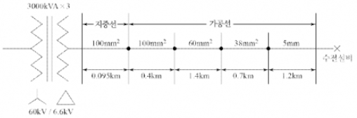
[조건]
[표 1] 가공전선로(경동선) %임피던스
| 배선방식 | 선의 굵기 [mm²] | %r [%/km] | %x [%/km] |
|---|---|---|---|
| 3상 3선 3[kV] | 100 | 16.5 | 29.3 |
| 80 | 21.1 | 30.6 | |
| 60 | 27.9 | 214.0 | |
| 50 | 34.8 | 32.0 | |
| 38 | 44.8 | 32.9 | |
| 30 | 57.2 | 33.6 | |
| 22 | 75.7 | 344.0 | |
| 14 | 119.2 | 35.7 | |
| 5 | 83.1 | 35.1 | |
| 4 | 127.8 | 36.4 | |
| 3상 3선 6[kV] | 100 | 4.1 | 7.5 |
| 80 | 5.3 | 7.7 | |
| 60 | 7.0 | 7.9 | |
| 50 | 8.7 | 8.0 | |
| 38 | 11.2 | 8.2 | |
| 30 | 18.9 | 8.4 | |
| 22 | 29.9 | 8.6 | |
| 14 | 29.9 | 8.7 | |
| 5 | 20.8 | 8.8 | |
| 4 | 32.5 | 9.1 | |
| 3상 4선 5.2[kV] | 100 | 5.5 | 10.2 |
| 80 | 7.0 | 10.5 | |
| 60 | 9.3 | 10.7 | |
| 50 | 11.6 | 10.9 | |
| 38 | 14.9 | 11.2 | |
| 30 | 19.1 | 11.5 | |
| 22 | 25.2 | 11.8 | |
| 14 | 39.8 | 12.2 | |
| 5 | 27.7 | 12.0 | |
| 4 | 43.3 | 12.4 |
[표 2] 지중케이블 전로의 %임피던스
| 배선방식 | 선의 굵기 [mm²] | %r [%/km] | %x [%/km] |
|---|---|---|---|
| 3상 3선 3[kV] | 250 | 6.6 | 5.5 |
| 200 | 8.2 | 5.6 | |
| 150 | 13.7 | 5.8 | |
| 125 | 13.4 | 5.9 | |
| 100 | 16.8 | 6.0 | |
| 80 | 20.9 | 6.2 | |
| 60 | 27.6 | 6.5 | |
| 50 | 32.7 | 6.6 | |
| 38 | 43.4 | 6.8 | |
| 30 | 55.9 | 7.1 | |
| 22 | 118.5 | 8.3 | |
| 3상 3선 6[kV] | 250 | 1.6 | 1.5 |
| 200 | 2.0 | 1.5 | |
| 150 | 2.7 | 1.6 | |
| 125 | 3.4 | 1.6 | |
| 100 | 4.2 | 1.7 | |
| 80 | 5.2 | 1.8 | |
| 60 | 6.9 | 1.9 | |
| 50 | 8.2 | 1.9 | |
| 38 | 8.6 | 1.9 | |
| 30 | 14.0 | 2.0 | |
| 22 | 29.6 | 2.0 | |
| 3상 4선 5.2[kV] | 250 | 2.2 | 2.0 |
| 200 | 2.7 | 2.0 | |
| 150 | 3.6 | 2.1 | |
| 125 | 4.5 | 2.2 | |
| 100 | 5.6 | 2.3 | |
| 80 | 7.0 | 2.3 | |
| 60 | 9.2 | 2.4 | |
| 50 | 14.5 | 2.6 | |
| 38 | 14.5 | 2.6 | |
| 30 | 18.6 | 2.7 |
[계산과정]
[계산과정]
[계산과정]
[계산과정]
참고: 문제의 그림과 표의 내용을 정확히 반영하여 계산과정과 정답을 작성해야 합니다. 제공된 정보만으로는 정확한 계산이 불가능하며, 전력 시스템 공학 지식이 필요합니다.
해설) 복합 계산형 / 난이도 상
[계산과정]
① 기준용량 10000 [kVA]의 변압기 %임피던스
\[ 변압기\ \%X_1 = \frac{10000}{9000} \times j7.4 \approx j8.22 [\%] \]
② 지중선 임피던스 %Z₁
[표3] (3상 3선 6[kV]), (100[mm²]) 참고하면
\[ \%Z_1 = \%r + j\%x = (0.095 \times 4.2) + j(0.095 \times 1.7) \approx 0.399 + j0.1615 [\%] \]
③ 가공선 임피던스 %Z₂
[표2] (3상 3선 6[kV]), (100, 60, 38[mm²], 5[mm]) 참고하면
\[ 100[mm^2] \rightarrow \%r + j\%x = 0.4 \times (4.1 + j7.5) = 1.64 + j3 \]
\[ 60[mm^2] \rightarrow \%r + j\%x = 1.4 \times (7 + j7.9) = 9.8 + j11.06 \]
\[ 38[mm^2] \rightarrow \%r + j\%x = 0.7 \times (11.2 + j8.2) = 7.84 + j5.74 \]
\[ 5[mm^2] \rightarrow \%r + j\%x = 1.2 \times (20.8 + j8.8) = 24.96 + j10.56 \]
\[ \therefore 전체\ 합계\ \%Z_2 = 44.24 + j30.36 [\%] \]
④ 합성 임피던스
\[ \%Z = \%발전기 + \%Z_1 + \%Z_2 \]
\[ = (j1.5) + (j8.22) + (0.399 + j0.615) + (44.24 + j30.36) = 44.639 + j40.2415 \]
\[ | \%Z | = \sqrt{44.639^2 + 40.2415^2} \approx 60.10 \]
정답 60.10[%]
[계산과정]
\[ 단락용량\ P_s = \frac{100}{\%Z} \times P_n = \frac{100}{60.1} \times 10000 [kVA] \approx 16.64 [MVA] \]
정답 16.64[MVA]
[계산과정]
\[ 단락전류\ I_s = \frac{100}{\%Z} \times I_n = \frac{100}{60.1} \times \left( \frac{10,000}{\sqrt{3} \times 6.6} \times 10^{-3} \right) \approx 1.46 [kA] \]
정답 1.46[kA]
[계산과정]
\[ 차단용량 = \sqrt{3} \times 정격전압 \times 정격 차단 전류 \]
\[ = \sqrt{3} \times (6.6 \times \frac{1.2}{1.1}) \times 1.46 \approx 18.15 [표1] (정격전압 7,200[V]) 참고하면 \]
정답 25[MVA] 선정
부분점수
| 점수 | 세부기준 |
|---|---|
| 8점 | 소문항 (1)~(4) 총 4개의 계산과정과 정답이 모두 맞은 경우 8점 획득 |
| 2점 | 소문항 총 4개 중 계산과정과 정답이 모두 맞는 1개당 2점 획득 |
해설
주어진 자료를 해석해서 순차적으로 문제를 풀어야 한다.
[조건]
[참고자료 1] 실지수 분류 기호
| 기호 | 실지수 | 범위 |
|---|---|---|
| A | 5 | 4.5 이상 |
| B | 4 | 4.5~3.5 |
| C | 3 | 3.5~2.75 |
| D | 2.5 | 2.75~2.25 |
| E | 2 | 2.25~1.75 |
| F | 1.5 | 1.75~1.38 |
| G | 1.25 | 1.38~1.12 |
| H | 1 | 1.12~0.9 |
| I | 0.8 | 0.9~0.7 |
| J | 0.6 | 0.7 이하 |
[참고자료 2] 실지수 도표
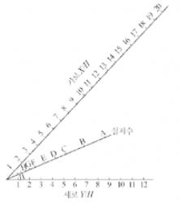
[참고자료 3] 조명률 표
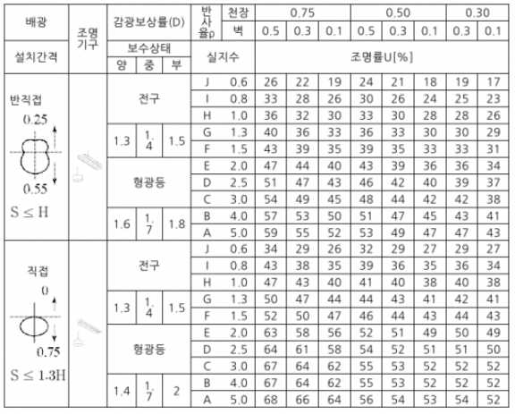
(계산과정)
(정답)
(계산과정)
(정답)
(정답)
(계산과정)
(정답)
(계산과정)
(정답)
① 등과 등 사이의 최대 거리는 얼마인지 계산하시오.
(계산과정)
(정답)
② 등과 벽 사이의 최대 거리는 얼마인지 계산하시오. (단, 벽면을 사용하지 않는 것으로 한다.)
(계산과정)
(정답)
(정답)
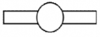
[계산과정]
\[ RI = \frac{20 \times 32}{6 \times (20 + 32)} = 2.051 \]
표에서 범위 2.25~1.74에 해당하는 E 선정
정답 E
정답 E
$H = = 5.33, H = = 3.33 $두 점을 직선으로 연결하여 가장 가까운 기호를 실지수 분류기호로 선정한다.
정답 표에서 직접조명 방식, 천장 반사율 75[%], 벽면 반사율이 50[%], 실지수 E에 해당하는 조명률 63[%]를 선택한다.
[계산과정]
문제 조건에서 직접조명, 형광등, 보수상태 양호에 해당하는 감광보상률을 표에서 D=1.4 선택
\[ N = \frac{500 \times (32 \times 20) \times 1.4}{(123 \times 160) \times 0.63} = 36.133 \]
정답 37등
[계산과정]
\[ 분기회로 수 = \frac{160 \times 37}{220 \times 16} = 1.681 \]
정답 2회로
정답 ① $S = 7.8[m], ② S = 3[m] $
정답 형광등
| 점수 | 세부기준 |
|---|---|
| 15점 | (1)~(7)이 모두 정답인 경우 10점 획득 |
| 4점 | 문항 (1)의 계산과정과 답이 모두 맞은 경우 4점, 오류가 있으면 0점 |
| 2점 | 문항 (2)의 답이 맞으면 2점, 오답이면 0점 |
| 2점 | 문항 (3)의 답이 맞으면 2점, 오답이면 0점 |
| 3점 | 문항 (4)의 계산과정과 답이 모두 맞은 경우 3점, 오류가 있으면 0점 |
| 1점 | 문항 (5)의 계산과정과 답이 모두 맞은 경우 2점, 오류가 있으면 0점 |
| 2점 | 문항 (6)의 ①번의 계산과정과 답이 모두 맞은 경우 1점, 오류가 있으면 0점, ②번의 계산과정과 답이 모두 맞은 경우 1점, 오류가 있으면 0점 |
| 1점 | 문항 (7)이 정답이면 1점, 오답이면 0점 |
실지수와 조명 방정식을 이용해 조명을 설계하는 자료해석형 문제이다. 실지수 공식은 반드시 암기하고, 조명 방정식 FUN=EAD를 통해 조명률을 구한다.
실지수(RI: Room Index)
① 조명률을 구하기 위해 알아야 할 하나의 지표이다.
② 공식
\[ 실지수 (RI) = \frac{\text{방의 가로길이} \times \text{방의 세로길이}}{\text{등 높이} \times (\text{방의 가로길이} + \text{방의 세로길이})} = \frac{X \times Y}{H(X+Y)} \]
③ 실지수를 통하여 표에서 조명률(U)을 구한다.
④ 등기구 수 구한다.
\[ 등기구 수 N = \frac{EAD}{FU} \]
⑤ 구한 N값을 이용하여 전체 등기구의 전력 [W]=[VA]를 구한 후, 분기회로 수를 구한다.
\[ 분기회로 수 N = \frac{P[VA]}{\text{전압}[V] \times \text{전류}[A]} \]
⑥ 등 간격을 구한다
등기구 간의 간격: \(S \le 1.5H\)
벽과 등기구 간의 간격
벽면을 사용하지 않을 경우: \(S \le \frac{H}{2}\)
벽면을 사용할 경우: \(S \le \frac{H}{3}\)